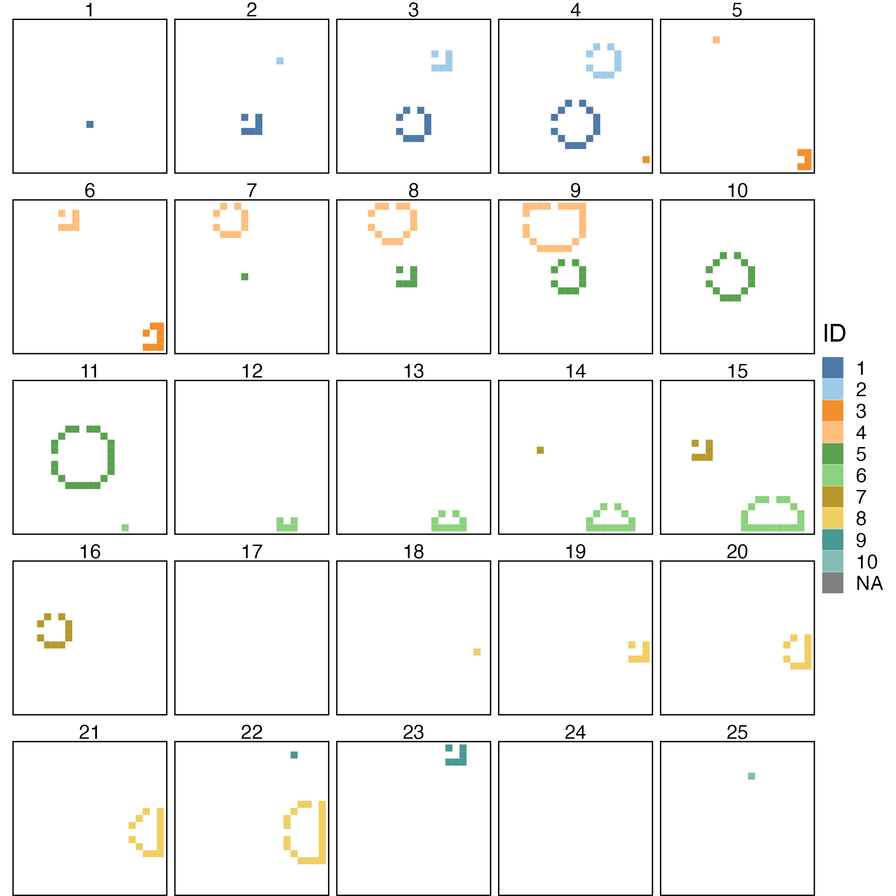
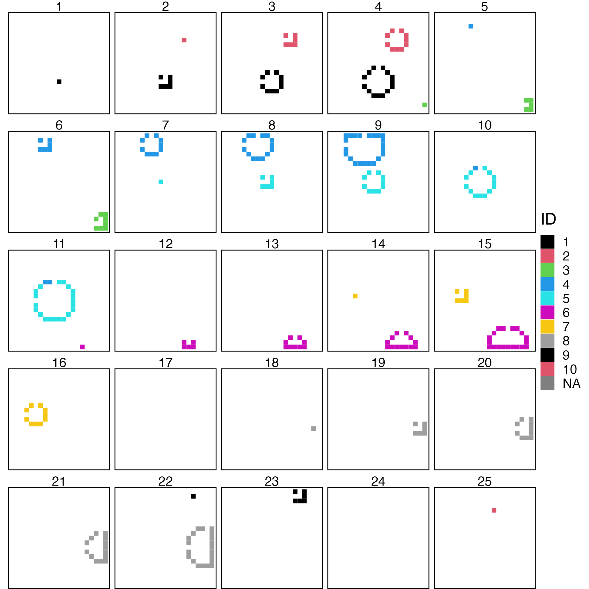

vignettes/ARCOS-synthRand2D.Rmd
ARCOS-synthRand2D.RmdGenerate a sequence of concentrically growing waves with random duration placed randomly in X/Y/T.
Create an arcosTS object. The eventid
column corresponds to an ID of a synthetic event. The id
column is the ID of an object.
# create events
nevents = 10L
maxt = 25L
maxx = 20L
maxy = 20L
maxdur = 5L
ts = ARCOS::genRandSynth2D(nevents = nevents,
maxt = maxt,
maxx = maxx,
maxy = maxy,
maxdur = maxdur,
inSeed = 1)| t | x | y | eventid | id |
|---|---|---|---|---|
| 1 | 10 | 14 | 1 | 290 |
| 2 | 11 | 14 | 1 | 291 |
| 2 | 10 | 15 | 1 | 310 |
| 2 | 11 | 15 | 1 | 311 |
| 2 | 9 | 15 | 1 | 309 |
| 2 | 11 | 13 | 1 | 271 |

Identify and track collective events. The collid column
is the result of the tracking algorithm.
Note that the events can overlap, therefore the ID of collective
event (column collid) from the tracking algorithm may
differ from the original event id (column eventid).
tcoll = ARCOS::trackColl(ts[complete.cases(ts)],
eps = 2)| t | id | collid.frame | collid | x | y | eventid |
|---|---|---|---|---|---|---|
| 1 | 290 | 1 | 1 | 10 | 14 | 1 |
| 2 | 114 | 3 | 2 | 14 | 5 | 2 |
| 2 | 269 | 2 | 1 | 9 | 13 | 1 |
| 2 | 271 | 2 | 1 | 11 | 13 | 1 |
| 2 | 291 | 2 | 1 | 11 | 14 | 1 |
| 2 | 309 | 2 | 1 | 9 | 15 | 1 |

Save facets as individual frames in PNG files. Can be further converted to an animation.
# Create output directory for saving PNG frames
if (lPar$saveFrames) {
dir.create(file.path(lPar$dirCore,
lPar$dirFramesOut),
recursive = TRUE, showWarnings = F)
}
vCollID = unique(tcoll$collid)[!is.na(unique(tcoll$collid))]
names(myColPal) = vCollID
if (lPar$saveFrames) {
for (ii in seq_len(maxt)) {
locFrame = tcoll[t == ii]
pOut = ggplot(locFrame,
aes(x = x,
y = y)) +
theme_void() +
theme(text = element_text(size = 20),
legend.position = "none",
panel.border = element_rect(colour="black",
fill = NA,
linewidth = 1),
panel.background = element_rect(fill = "grey90")) +
geom_text(x=0, y=0,
label=sprintf("%d", ii))
# Generate an empty plot, if data does not exists in the frame.
if (sum(complete.cases(locFrame)) > 0) {
pOut = pOut +
geom_tile(aes(fill = as.factor(get("collid")))) +
scale_fill_manual(name = "ID",
values = myColPal,
) +
coord_fixed(ratio=1) +
scale_x_continuous(limits = c(-1, maxx), expand = c(0,0)) +
scale_y_continuous(trans = "reverse",
limits = c(maxy, -1), expand = c(0,0))
}
locFname = file.path(lPar$dirCore,
lPar$dirFramesOut,
sprintf("frame-%04d.png", ii))
ggsave(filename = locFname, plot =
pOut, width = 3, height = 3)
}
}Convert a sequence of PNG files into an animated GIF using
ImageMagick’s convert and/or into an MP4 movie using
ffmpeg.
# Use ImageMagick to create an animated GIF
vFrames <- sort(
list.files(
file.path(lPar$dirCore,
lPar$dirFramesOut),
"^.*\\.png$",
full.names = T))
system2("convert",
args = c(vFrames,
c("-loop", "0",
file.path(lPar$dirCore,
lPar$dirFramesOut,
"frame-anim.gif"))))
# Using ffmpeg to create mp4
system2("ffmpeg",
args = c("-y -framerate", 5,
"-i", sprintf("%s/frame-%%04d.png",
file.path(lPar$dirCore,
lPar$dirFramesOut)),
"-vcodec libx264 -s 560x420 -pix_fmt yuv420p",
file.path(lPar$dirCore,
lPar$dirFramesOut,
"frame-anim.mp4")))